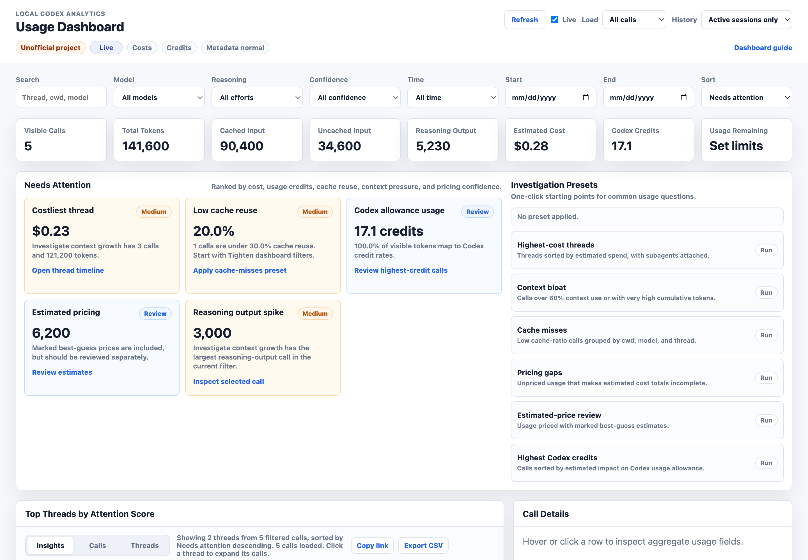
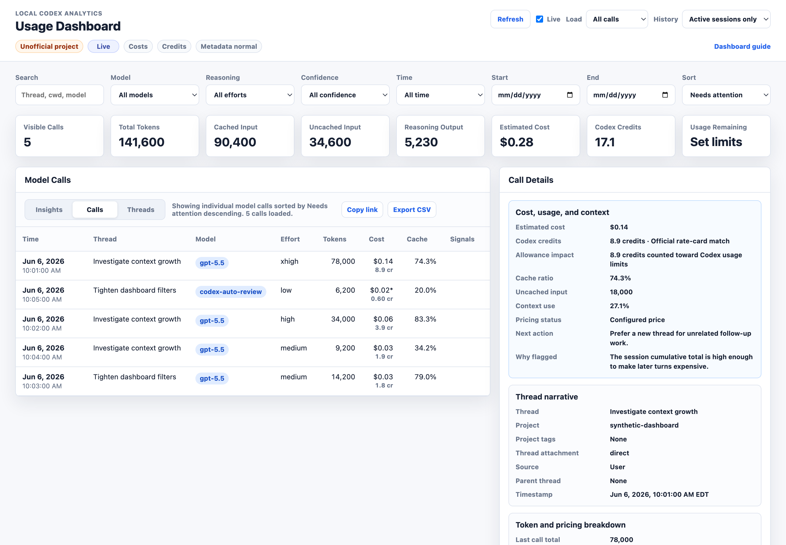
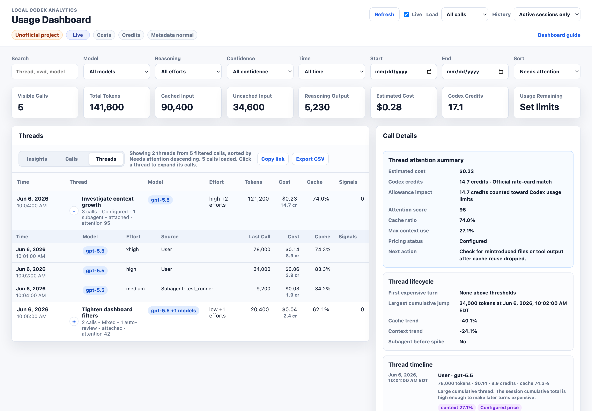
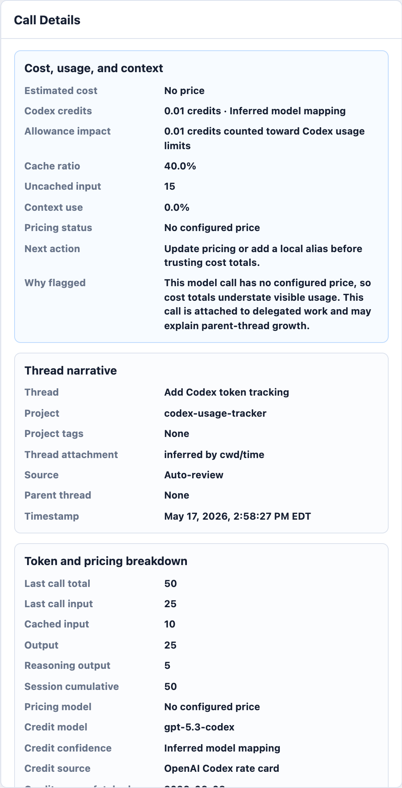

Dashboard Guide
Unofficial project: AI Usage Dashboard is independent and is not made by, affiliated with, endorsed by, sponsored by, or supported by OpenAI. OpenAI and Codex are trademarks of OpenAI.
This local guide uses synthetic screenshots and does not contain prompts, assistant text, tool output, or real Codex session content.
The screenshots below still show the previous light theme. The dashboard now ships with the Terminal Sunset dark theme; layout and controls are unchanged, so the annotated walkthroughs remain accurate. Screenshots will be regenerated from synthetic fixtures.
Open The Dashboard
For the best experience, run the localhost dashboard server:
ai-usage-dashboard setup
ai-usage-dashboard update-pricing
ai-usage-dashboard update-rate-card
ai-usage-dashboard refresh --source all
ai-usage-dashboard serve-dashboard --source all --openFor optional allowance context, run ai-usage-dashboard init-allowance or ai-usage-dashboard parse-allowance "5h 79% 6:50 PM Weekly 33% Jun 7" with current values copied from Codex Usage or /status.
For Claude Code remaining limits, run ai-usage-dashboard install-claude-limits-statusline once. The installer updates ~/.claude/settings.json, wraps and preserves an existing status-line command when present, and writes only provider identity, percentages, reset timestamps, and source metadata to ~/.codex-usage-tracker/claude-limits.json.
To tune review thresholds locally, run ai-usage-dashboard init-thresholds and edit ~/.codex-usage-tracker/thresholds.json. These thresholds control low-cache, high-context, high-uncached-input, large-thread, reasoning-spike, low-output, and high-cost recommendations.
To tune project attribution locally, run ai-usage-dashboard init-projects and edit ~/.codex-usage-tracker/projects.json. The dashboard derives project name, relative cwd, branch, tags, and a hashed remote origin from aggregate cwd and local Git metadata when available.
Before sharing screenshots or generated artifacts, put --privacy-mode redacted or --privacy-mode strict before the subcommand, such as ai-usage-dashboard --privacy-mode strict serve-dashboard --open. Redacted mode hides raw cwd/source paths, hides Git remote labels, and hashes unnamed projects while preserving configured aliases. Strict mode also hides project-relative cwd, Git branch, and tags. The dashboard header shows the active metadata mode.
The server enables live aggregate refresh and on-demand context loading. Static file mode can still filter, sort, and inspect aggregate fields, but cannot refresh logs or load context.
The localhost server uses a random per-server token for refresh and context API calls, validates loopback Host and Origin headers, and can run as aggregate-only with ai-usage-dashboard serve-dashboard --no-context-api.
Insights View

The dashboard opens in Insights view. It ranks costly threads, Codex allowance usage, low cache reuse, context bloat, unpriced usage, estimated pricing, and reasoning-output spikes from aggregate fields only.
Needs Attentioncards pair each signal with a next action.Investigation Presetsapply a view, derived filter, sort order, and explanatory caption together.- Presets include highest-cost threads, highest Codex credits, context bloat, cache misses, pricing gaps, and estimated-price review.
Calls View

Use Calls view to inspect individual model calls. Sort by attention, time, thread, model, tokens, cost, highest Codex credits, cache, context, or signals. Hover or click a row to pin grouped aggregate fields in Call Details. Top cards show cached input, uncached input, Codex credit usage, and provider-specific remaining usage: Codex Remaining on the Codex tab and Claude Remaining on the Claude Code tab when a status-line snapshot is available. Provider tabs are the primary source switch: use Overview for cross-provider comparison, then switch to Codex or Claude Code when you want provider-specific labels and explanations. The Time filter supports all time, today, this week, last 7 days, this month, and custom calendar ranges, and defaults to This week. Presets are relative to the browser's local date; custom ranges use inclusive start and end dates. The History control defaults to Active sessions only; switch to All history only when you want live refresh to scan archived session logs. The Confidence filter separates exact cost, estimated cost, unpriced cost, exact credit-rate matches, inferred credit mappings, user credit overrides, and missing credit rates. The URL tracks the active view, filters, time preset or custom range, history scope, sort, preset, selected row or thread, page, and expanded threads. Copy link copies that state, and Export CSV downloads the currently filtered aggregate calls. The header uses bracket-tag status chips (for example [LIVE], [STATIC]); exact refresh time and source details live in hover titles so live refreshes do not reflow the page. A Parser warnings chip appears only when the latest refresh reports skipped token events, missing expected token fields, invalid counters, duplicate cumulative snapshots, or unknown event shapes.
Last call totalis the selected model call.Session cumulativeis the running total Codex logged for that session.Cached inputandUncached inputmake cache behavior visible without storing transcript text.- In
Claude Code, these becomeCache ReadandDirect Input. Claude totals include direct input, cache writes, cache reads, and output, so very large totals are often mostly cache-read reuse rather than fresh prompt growth. - A cost with
*means the pricing row is a marked best-guess estimate. - Codex credits are estimated from aggregate input, cached-input, and output counters using bundled or locally configured rate-card values. Direct matches are exact, inferred mappings are estimated, and local credit-rate overrides are user-provided.
- Search matches derived project names, project-relative cwd values, tags, branch names, and redacted remote labels.
- Time values are shown in your browser's local date/time format while sorting and time filtering still use the logged timestamp.
- In redacted or strict privacy mode, search only sees the redacted metadata fields included in the dashboard payload.
Codex Remainingis not read from the logged-in account plan. It applies only to Codex/OpenAI usage. Configure~/.codex-usage-tracker/allowance.jsonwith values copied from Codex Settings > Usage, the Codex Usage dashboard, or/statuswhen you want current remaining allowance context.Claude Remainingis read from~/.codex-usage-tracker/claude-limits.json, filled automatically afterinstall-claude-limits-statuslineconfigures Claude Code. It stores only percentages, reset timestamps, and source metadata.- Call details include a recommended action and a "why flagged" explanation derived only from aggregate counters and pricing/allowance metadata.
- Raw aggregate identifiers and source file metadata are collapsed until you need them.
Threads View

Use Threads view to understand a work session as a group. Expand a thread to see calls oldest to newest. Subagents with logged parent session ids are shown under their parent thread; inferred auto-review attachments are marked in the details panel. Selected threads also show lifecycle signals such as first expensive turn, largest cumulative jump, cache trend, context trend, and whether subagent or auto-review work appeared before a usage spike.
Details And Context

The details panel shows primary cost, Codex credits, allowance impact, cache, context, pricing, and next-action signals first. It then groups thread narrative, token/pricing breakdowns, credit confidence and rate-card source metadata, collapsed raw identifiers, and source metadata. When served from localhost with the context API enabled, Load context fetches one redacted, size-limited source excerpt on demand. When started with --no-context-api, context buttons stay disabled and the dashboard remains aggregate-only.
Investigating Long Chat Growth
Prompt caching helps, but cached input is not free. Long-running chats can carry a large cached prefix into later turns, so usage can climb quickly even when the visible request looks small.
Watch Cached input, Uncached input, Session cumulative, Context use, and Cache ratio together. When old context is no longer useful, starting a fresh Codex thread may be more efficient than carrying a large cached history forward.
Privacy Model
The dashboard includes session ids, thread names, cwd values, source file paths, timestamps, model labels, reasoning effort, token counts, cost estimates, Codex credit estimates, optional manually entered allowance windows, sanitized Claude limit snapshots, and derived ratios. It does not include prompts, assistant responses, raw tool output, pasted secrets, message snippets, or transcript text. Remaining Codex allowance is read from local Codex rate-limit metadata when present; Claude remaining limits are read only from the sanitized status-line snapshot when configured. Local Codex logs may also omit usage from other ChatGPT agentic surfaces that share the same allowance. Archived sessions are excluded from dashboard payloads by default; All history is an explicit opt-in because archived logs can make refreshes slower and make current dashboards look inflated by older work.
Use --privacy-mode redacted or --privacy-mode strict before sharing generated dashboards, CSV exports, query JSON, or support bundles. Redacted mode removes raw cwd/source paths and hides unnamed project names behind stable hashes. Strict mode also hides project-relative cwd, branch, and tags. Configured project aliases are treated as explicit display opt-ins in both modes.
Pricing and Codex credit estimates are source-stamped local calculations. Use ai-usage-dashboard pin-pricing --output <path> when a report needs to keep the same USD pricing snapshot over time, and use ai-usage-dashboard update-rate-card when you want an explicit local copy of the bundled Codex credit rate-card snapshot.